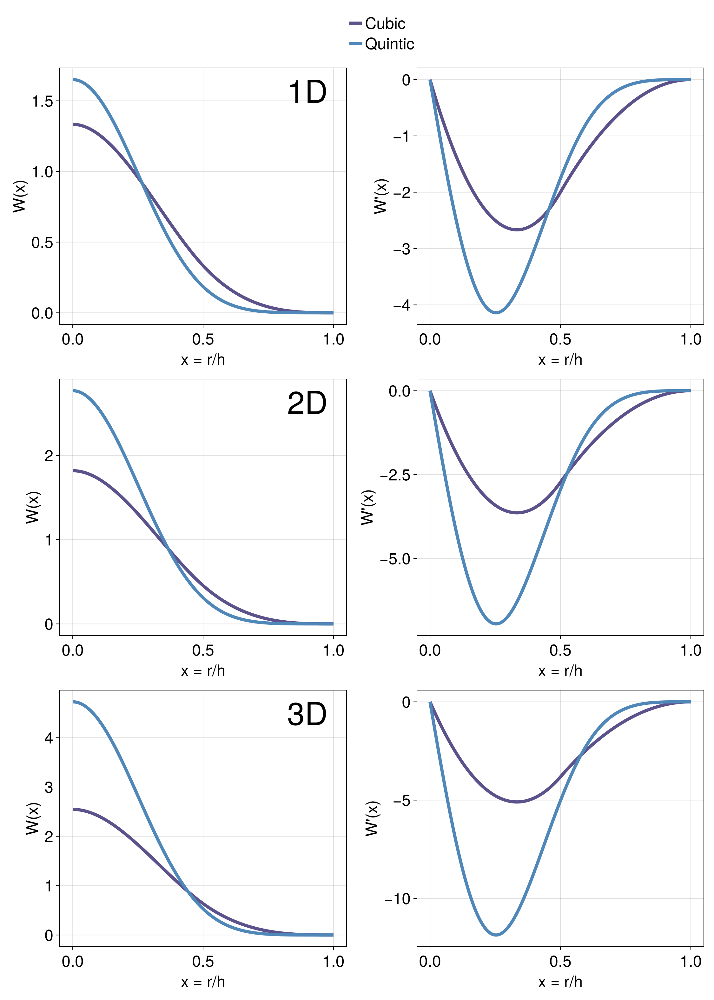
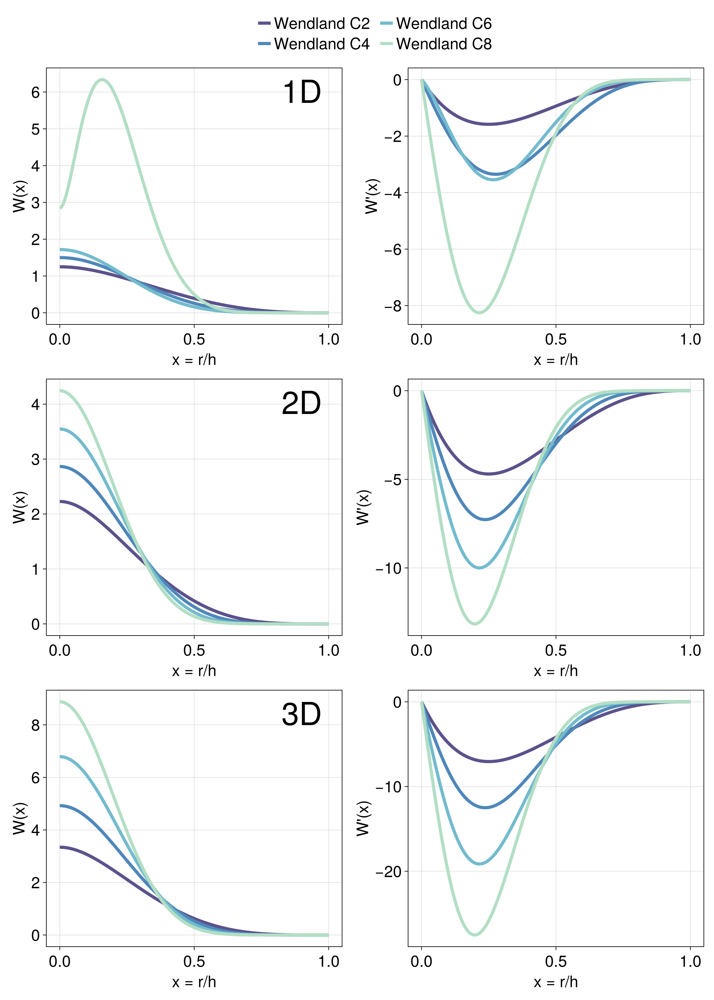

Kernels
This package supplies a number of kernels frequently used in Smoothed-Particle Hydrodynamics (SPH), as well as functions to evaluate their values and derivatives in 1D, 2D and 3D.
These kernels include the B-splines (Cubic and Quintic) suggested in Monaghan & Lattanzio (1985) and the Wendland functions (WendlandC2, WendlandC4, WendlandC6) and WendlandC8 (Wendland 2009) as suggested in Dehnen & Aly (2012).
Monaghan Kernels

Wendland Kernels

Misc Kernels

Defining Kernels
We use multiple dispatch to make to conform to Julia coding standards and make the code more readable.
To use e.g. a 3D WendlandC6 kernel use
k = WendlandC6(3)This will default to a 3D kernel with a precision defined by the system OS (usually Float64). If you want to use a Float32 kernel you can define the precision as the (optional) first argument
k = WendlandC6(Float32, 3)Evaluating Kernels
To evaluate a kernel you need to use the function
kernel_value(k::AbstractSPHKernel, u::Real, h_inv::Real)where AbstractSPHKernel is the supertype for an implemented SPH kernel, $u = \frac{x}{h}$ is the distance to the kernel origin in measures of the smoothing length and h_inv is the inverse of the smoothing length.
You need to define the dimension of the kernel in the kernel <: AbstractSPHKernel, as explained before.
If you want your code to look a little more fancy you can also use the alternative functions 𝒲.:
𝒲( kernel::AbstractSPHKernel, u::Real, h_inv::Real) = kernel_value(kernel, u, h_inv)As an example:
# Wendland C6 kernel with double precision in 3D
k = WendlandC6(Float64, 3)
# distance between the particle and the origin of the kernel
r = 0.5
h = 1.0
h_inv = 1.0/h
u = r * h_inv
# kernel value at position r
val = 𝒲(k, u, h_inv)
println("val = $val")val = 0.40442005421590166Evaluating Derivatives
Similar to Evaluating Kernels you can evluate a kernel derivative with
kernel_deriv(k::AbstractSPHKernel, u::Real, h_inv::Real)or in the fancy way:
d𝒲(kernel::AbstractSPHKernel, u::Real, h_inv::Real) = kernel_deriv(kernel, u, h_inv)Non-normalized kernels
In some cases it may be useful to evaluate non-normalized kernels and apply the normalization at a later point. This saves some computing time in e.g. loops.
For these cases you can evaluate the same functions as above, just without h_inv:
# non-normalized kernel value
kernel_value(kernel::AbstractSPHKernel, u::Real)
𝒲(kernel::AbstractSPHKernel, u::Real)
# non-normalized kernel derivative
kernel_deriv(kernel::AbstractSPHKernel, u::Real)
d𝒲(kernel::AbstractSPHKernel, u::Real)To apply the normalisation yourself you can use
# kernel values
kernel_norm(kernel::AbstractSPHKernel, h_inv::Real)
𝒩(kernel::AbstractSPHKernel, h_inv::Real)
# kernel derivatives
kernel_deriv_norm(kernel::AbstractSPHKernel, h_inv::Real)
d𝒩(kernel::AbstractSPHKernel, h_inv::Real)such that the following holds
# kernel values
kernel_value(kernel, u, h_inv) == kernel_norm(kernel, h_inv) * kernel_value(kernel, u)
𝒲(kernel, u, h_inv) == 𝒩(kernel, h_inv) * 𝒲(kernel, u)
# kernel derivatives
kernel_deriv(kernel, u, h_inv) == kernel_deriv_norm(kernel, h_inv) * kernel_deriv(kernel, u)
d𝒲(kernel, u, h_inv) == d𝒩(kernel, h_inv) * d𝒲(kernel, u)Bias Correction
You can correct for the kernel bias of the Wendland kernels as described in Dehnen & Aly (2012), Eq. 18 + 19 with the functions:
bias_correction(kernel::AbstractSPHKernel, density::Real, m::Real, h_inv::Real, n_neighbours::Integer)or again in the fancy way
δρ(kernel::AbstractSPHKernel, density::Real, m::Real, h_inv::Real, n_neighbours::Integer) = bias_correction(kernel, density, m, h_inv, n_neighbours)
This will return a new value for the density:
density = 1.0
kernel = WendlandC6(3)
# correct density
density = bias_correction(kernel, density, 1.0, 0.5, 295)
println("density = $density")density = 0.9991237081365336